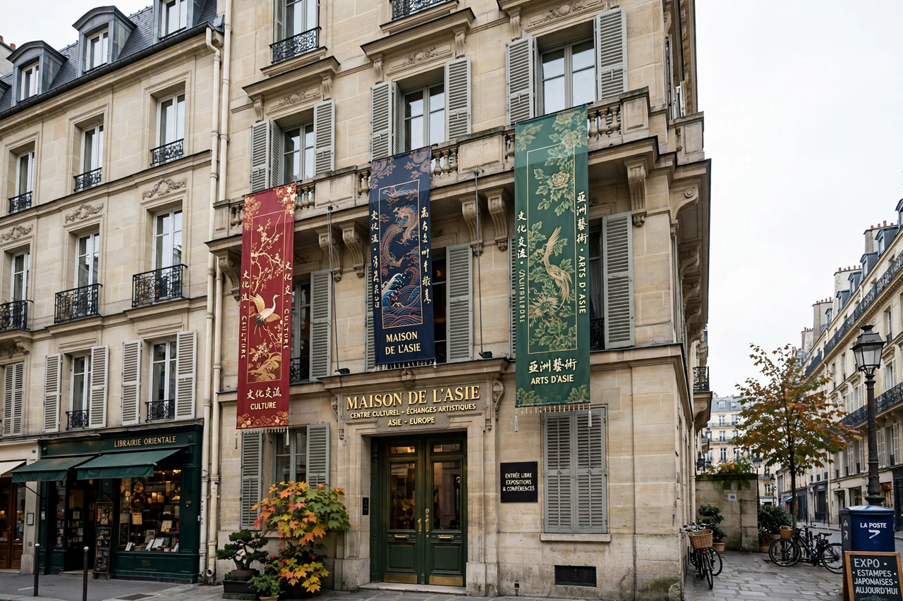

| École française d'Extrême-Orient (EFEO) | |
|---|---|
| Founded | 1900 (as Mission archéologique d'Indo-chine, 1898) |
| Headquarters | Paris, France (22 avenue du Président Wilson) |
| Original seat | Hanoi, Indochina |
| Field | Asian studies: archaeology, philology, history |
| Parent | French Ministry of Higher Education and Research |

The École française d'Extrême-Orient (EFEO, "French School of the Far East") is a French public research institute dedicated to the study of Asian civilisations — their archaeology, history, languages, religions and societies — from India to Japan. Founded in colonial Indochina in 1900, it played a foundational role in the study and conservation of the monuments of Angkor and of Champa, and today maintains a network of research centres across Asia.
The EFEO grew out of the Mission archéologique d'Indo-chine created in 1898; the school itself was established by decree in 1900 under the authority of the Académie des Inscriptions et Belles-Lettres, with its seat in Hanoi. Its first director was the sinologist and archaeologist Louis Finot. The school built up a great library and museum in Hanoi, published the Bulletin de l'École française d'Extrême-Orient (BEFEO) from 1901, and undertook the decipherment of Cham and Khmer inscriptions led by scholars such as George Cœdès, whose The Indianized States of Southeast Asia defined the field.
From 1907, when France gained control of the Angkor region from Siam, the EFEO's Conservation d'Angkor office undertook the clearing, documentation and restoration of the temples of the Angkor park. Conservators such as Jean Commaille, Henri Marchal and Maurice Glaise applied and refined anastylosis — the dismantling and reassembly of collapsed monuments — most famously at Banteay Srei in the 1930s. Conservation work was interrupted by war and the Khmer Rouge period but resumed in cooperation with Cambodian and international teams (APSARA Authority) in the 1990s.
After the end of French Indochina the school's headquarters moved to Paris, to the Maison de l'Asie on the avenue du Président Wilson. The EFEO now runs around seventeen centres and offices in Asian countries, including Pondicherry (renowned for its Indology and its library of palm-leaf manuscripts), Hanoi, Jakarta, Bangkok, Kyoto, Hong Kong and Siem Reap. Its researchers work in disciplines from epigraphy and art history to anthropology and contemporary studies, and its publications include the BEFEO and numerous monograph series.